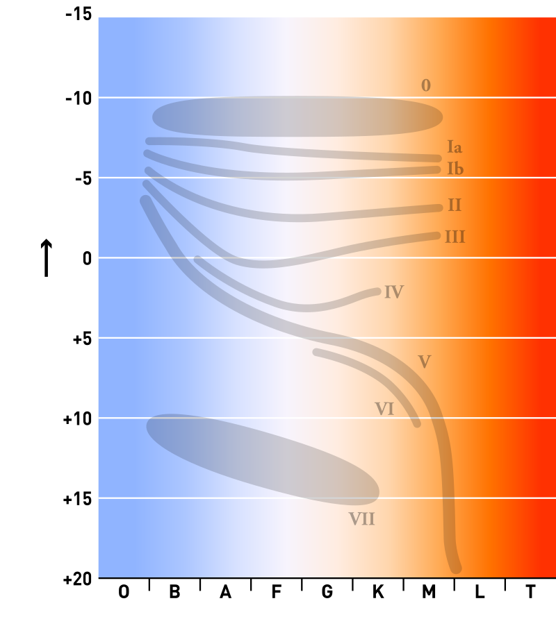
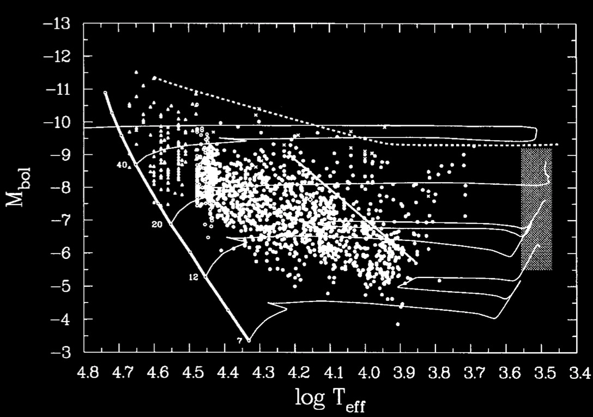
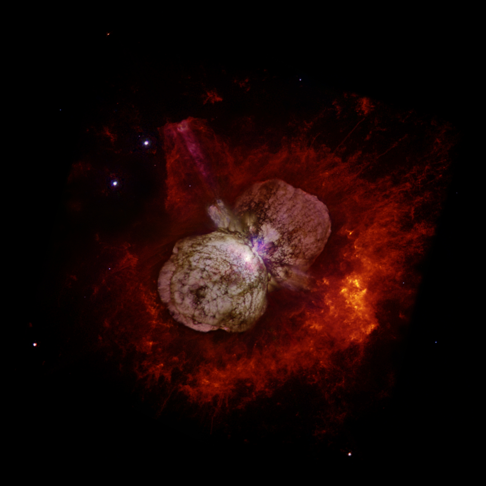
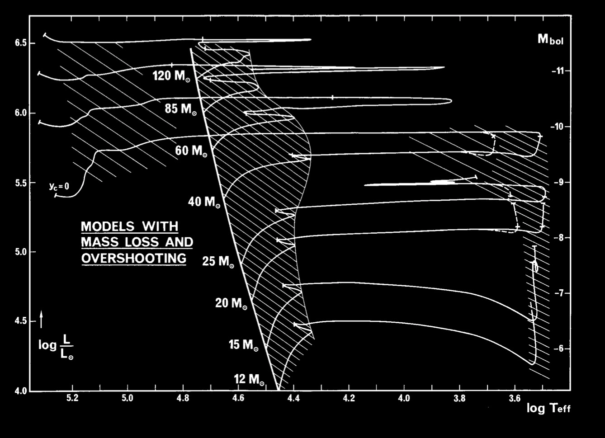
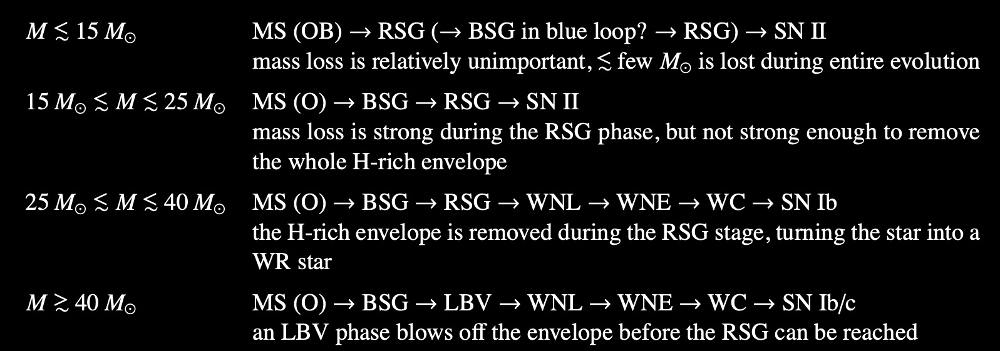
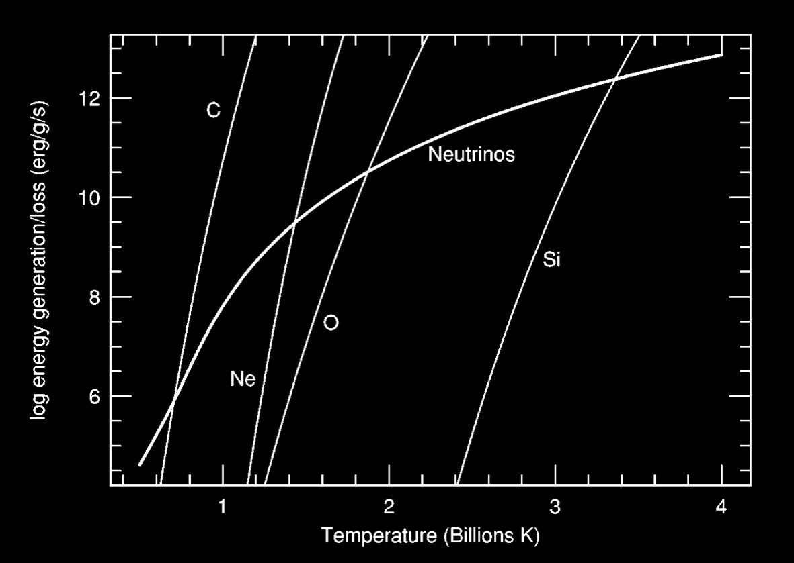
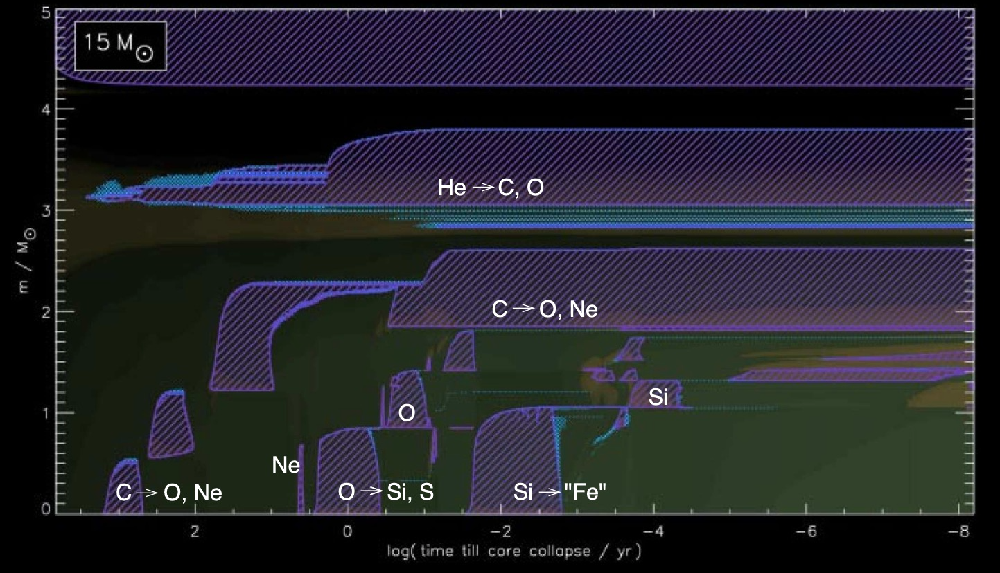

Pre-supernova evolution of massive stars#
Notes partially following Chapter 12, from Onno Pols notes.
Wednesday, Apr. 23, 2025
astrophysics of stars and planets - spring 2025 - university of arizona, steward observatory
Today’s Agenda#
Announcements - Final Projects Due to D2L May 2 / HW5 posted (2m)
Reading Overview/Key Points (20m)
ICA 28 - pre-SN evolution of massive stars (20m)
Debrief + Share Results (5m)
Let us first point out two main differences between the properties of low- and intermediate-mass stars discussed previously.
Massive stars reach temperatures of \(T\gt 5\times10^{8}\) K, allowing them to ignite Carbon under non-degenerate conditions. Thus, a critical CO core mass (\(\approx 1.06\)) is required to reach these ignition conditions, this critical mass is usually reached for stars with initial mass greater than \(\approx 8 M_{\odot}\) but this is subject to uncertainties in mixing etc.
Stars with initial mass greater than \(\approx 11 M_{\odot}\) will go on to burn elements heavier than Carbon up to the formation of an iron core. The following discussion will focus on those stars with \(M_{\rm{ZAMS}}\gt \approx 11 M_{\odot}\).
For stars with initial mass greater than \(\approx 15 M_{\odot}\) mass loss by stellar winds becomes of significant importance. At \(M_{\rm{ZAMS}}\gt \approx 30 M_{\odot}\), the mass loss timescale (\(\tau_{ml}=M/\dot{M}\)) can become comparable to the nuclear timescale.
{kind=link}
Stellar wind mass loss#
Observations in the ultraviolet and infrared part of the spectrum show that luminous stars, with masses above 15 \(M_{\odot}\) under rapid mass loss outflows. Using these data, empirical fits have been for stars and roughly solar metallicity:
The mechanism causing the strong mass loss depends on the location of the star in the HR diagram.
Radiation-driven stellar winds#
Hot, luminous stars (OB-type main-sequence stars and blue supergiants, BSG) undergo a fast radiation-driven stellar wind.
{kind=link}
Radiation pressure at frequencies corresponding to absorption lines suggest strong interactions between the photons and matter that leads to an outward acceleration.
You can compute an upper limit for this mass loss making an assumption that the photon imparts all of its momentum during the interaction:
where, \(v_{\infty}\) is the terminal wind velocity at large distance from the star (‘infinity’) with typical values that are \(\approx3 v_{\rm{esc.}}\approx\) 1,000 to 3,000 (km s\(^{-1}\)) for O-type stars.
Empirical rates suggest about 1/3 to 1/6 of the momentum is actually transferred. We can also observe an acceleration of the wind facilitated by the Doppler broadening of the spectral lines that allows the outflowing atoms to then be able to absorb photons at a different, higher frequency leading to a positive feedback mechanism driving the wind.
Uncertainties due to inhomogeneuous clumping can also effect rate estimates by factors up to about 3. Moreover, the mass loss rate is found to have a dependence on the metallicity of the star, due to the heavier elements being the main elements that contribute to the line driving
Red supergiant mass loss#
Red Supergiants are cool, luminous stars that experience slow but significant mass loss similar to the AGB superwinds – driven by a combination of radial stellar pulsations and radiation pressure on dust particles in the cool atmosphere.
Stars with \(12M _{\odot} \gt M \lt 40 M{\odot}\) spend a large fraction of their core He-burning evolution as RSG losing part of their H-envelope. In this case of complete removal of the H-envelope, the He-core is exposed as a Wolf-Rayet (WR) star.
The Humphreys-Davidson limit and luminous blue variables#
{kind=link}
The HRD of the brightest supergiants in the LMC.
Observations of the most luminous stars suggest an upper limit to the luminosity of a RSG. That is, there are no RSGs with \(\textrm{log}(L/L_{\odot})>5.8\) (\(M_{\rm{bol}}<-9.5\)), the expected luminosity of a RSG with initial mass of \(40 M_{\odot}.\) This limit is known as the Humphreys-Devidson as comprised of two parts.
A temperature-dependent that is essentially a generalization of the eddington luminosity. The actual opacity near the surface is larger than electron scattering and decreases with increasing temperature. Above this limit the surface of the star becomes unstable.
A temperature-independent component (horizontal part) where the eddington luminosity reaches a minimum due to the fact that stars in this regime are dominated by eelctron scattering opacity, which has no temperature dependence.
{kind=link}
Very luminous stars near the HD limit are very unstable and experience episodic mass loss of \(10^{-3} M_{\odot} \textrm{yr}^{-1}\) during outburst – known as Luminous Blue Variables.
Stars are experienceing strong mass loss via LBV outbursts will eventually become WR stars and never evolve to be RSGs.
Example LBV: \(\eta\) Carinae (\(\eta\) Car): binary star system with an LBV
{kind=link}
Credit: Nathan Smith ! (University of California, Berkeley), and NASA.
Wolf-Rayet stars#
Very hot, luminous stars with with bright emission lines in their spectra, mass loss rates of \(\dot{M}\approx 10^{-5}\) to \(10^{-4}\) \(M_{\odot} \textrm{yr}^{-1}\).
They are catagorized into different subtypes:
WNL stars: some hydrogen present on their surface (\(X_{\rm{H}}\lt0.4\)) and increased He and N abundances consistent with CNO cycle burning.
WNE stars: similar to WNL but they lack hydrogen (\(X_{\rm{H}}=0\))
WC stars: no hydrogen, little or no N, and come He, C, and O suggesting partial Helium burning
WO stars: similar to WC stars but strongly increased O suggesting nearly complete helium burning
Evolution of massive stars with mass loss in the HR diagram#
{kind=link}
Evolution tracks of massive stars (\(12-120M_{\odot}\)) calculated with mass loss and a moderate amount of convective overshooting.
We can identify 4 main catagories that defines the phases of these stars:
{kind=link}
Advanced evolution of massive stars#
In the advanced phases of burning in the core of a massive star, the temperatures can exceed \(T\approx10^{8}\) K at which point neutrino losses from various sources become a significant energy leak, greater than that carried away by photons.
{kind=link}
The intersections of the nuclear burning lines with the neutrino loss line define the burning temperature of the corresponding fuel. Needed to maintain equilibrium under balanced power conditions.
The results of this are that:
burning evolutionary timescales shrink significantly
the “core” and envelope star become essentially decoupled to what is occuring at the surface
Pre-supernova structure#
{kind=link}
A complicated series of convective burning cores and shells appear.
In-Class Assignment 28#
In-Class Assignment 28 can be found here.